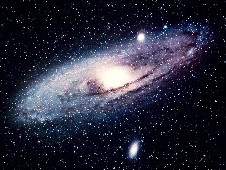
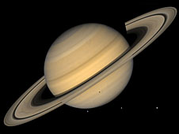

Wie naar de heldere nachthemel kijkt, klimt op van aardbewoner tot heelalbewoner. Kennis is daar niet voor nodig, de aanblik is genoeg. Wie echter weet wat er te zien is en hoe dat gevonden kan worden, geniet meer.

Sinds een aantal jaren verzorg ik lessen, projecten en presentaties over het heelal voor jong en oud. Doel is vooral het overbrengen van enthousiasme en het opwekken van nieuwsgierigheid naar de wereld waarin we leven, letterlijk in de ruimste zin.
NIEUW: Programmeren, serieus spelen met plezier
Computers programmeren is leuk.
Zelf leerde ik het als kind spelenderwijs van mijn vader.
Nu verdien ik er de kost mee, en leer het al ruim 30 jaar aan anderen in bedrijven en op scholen.
Deelnemers zijn onveranderlijk enthousiast.